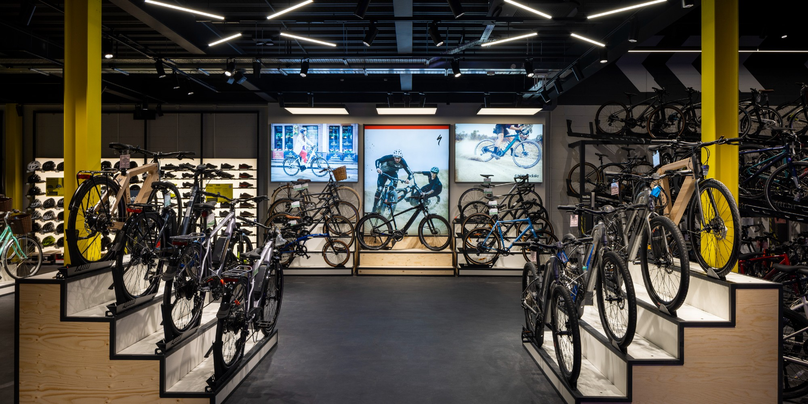

For this project, an API was used to see the accurate value of a variation of different cryptocurrencies. This data was then saved to a csv file which the user would be able to access. The data was sorted into a table and cleaned slightly to make it more readable. The data was then visualised in a graph.


A web scraping project designed to scrape data from Amazon and check the price of the item and monitor it; saving the data to a csv file that the user can then access on their PC. Once there is a change in price, the user would be notified with an email.

A project to find a correlation that exists within the data. A data set containing multiple films from a variation of different genres was used. When comparing all of the films within the dataset, it was found that votes and overall budget had the highest correlation to gross earnings.

For this project, a data set for Nashville Housing was taken and then cleaned in SQL.

A Covid-19 data set was used for this project. The aim was to explore the data and reveal the impact of Covid accross the World.

For this project, an Excel Bike Sales Dataset was first cleaned to make it more readable. Pivot tables were then created and displayed on a dashboard also in Excel.
Results from a Data Professional Survey focused on Data Professionals specifically was cleaned and then visualised in Power BI.

A Seattle AirBnB Excel dataset containing data from the 2016-2017 time period was used for this project. This dataset contained information on listings, reviews and a calendar. The data has been displayed visually as a dashboard in Tableau to represent the key details regarding this dataset.

Data Cleaning with Python to make the data set more presentable.